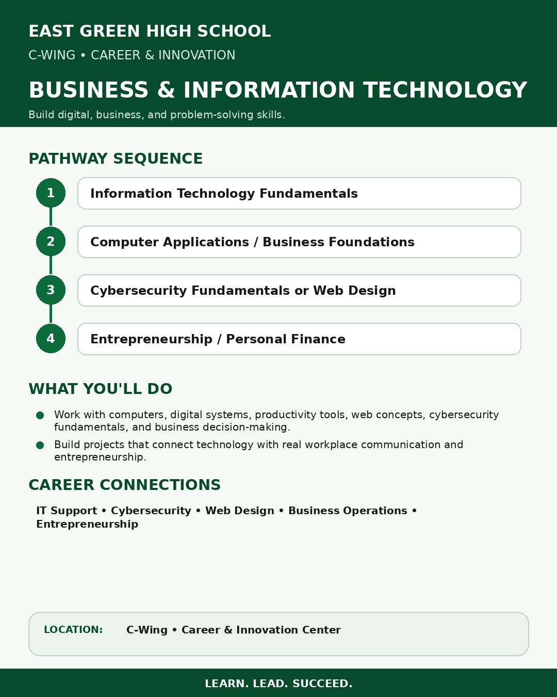
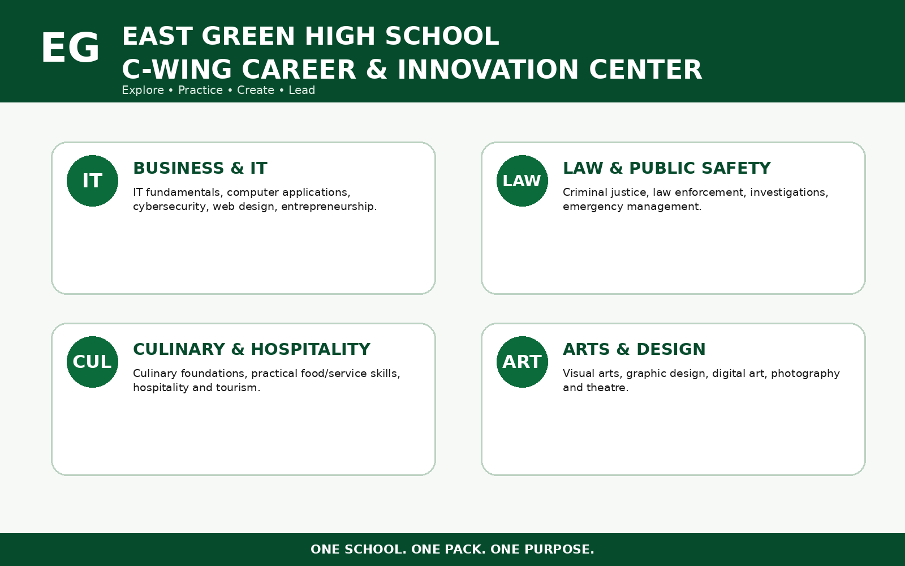
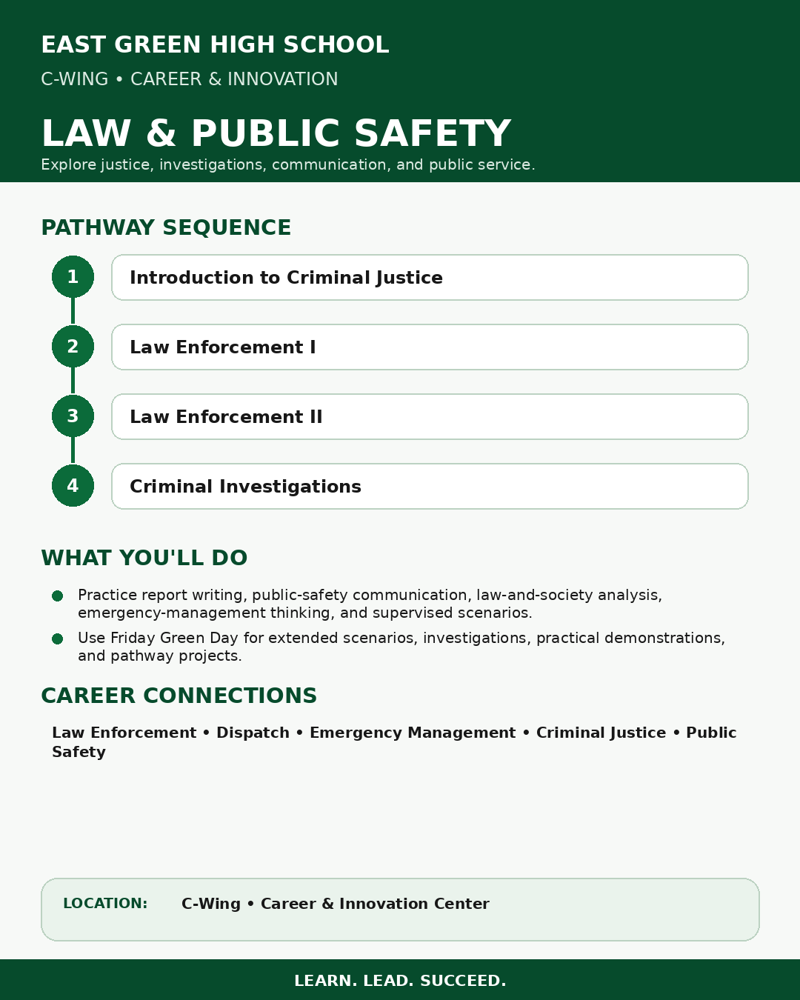
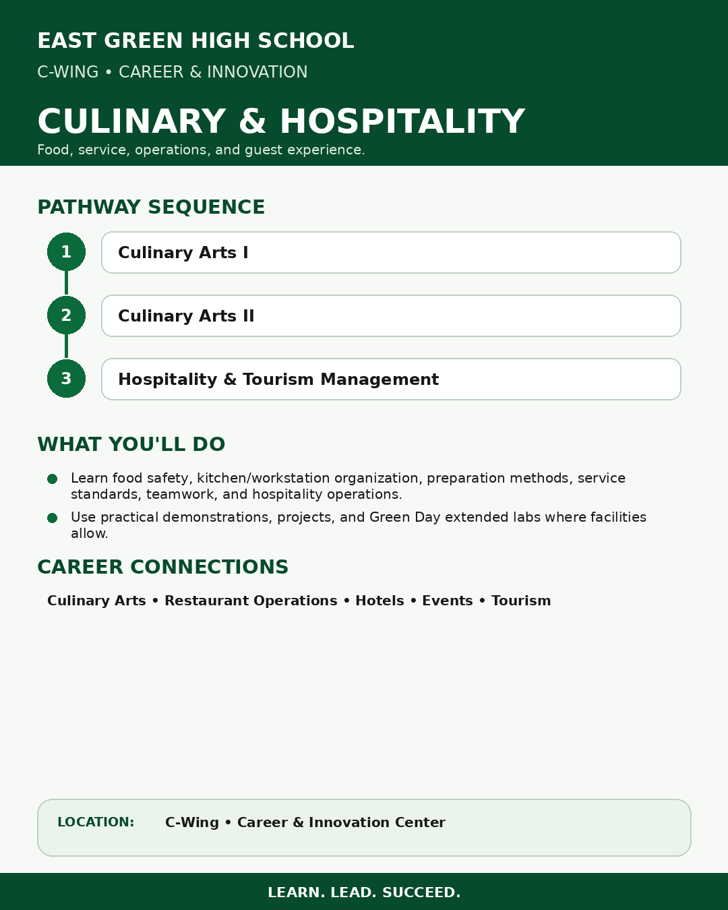
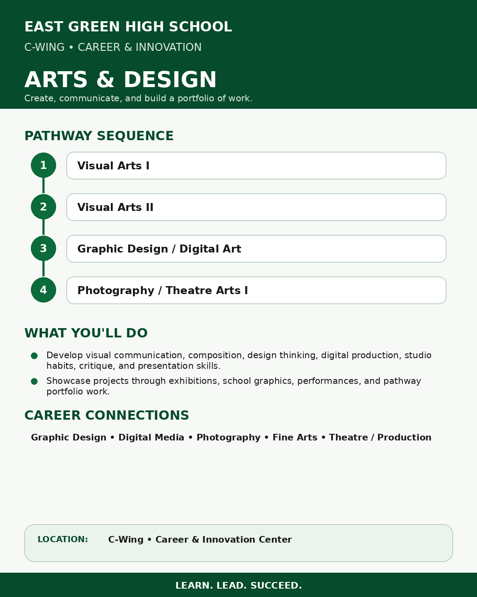

Business & Information Technology
IT fundamentals, applications, cybersecurity, web design, entrepreneurship, and personal finance.
East Green's C-Wing brings specialized programs together so students can build practical skills, complete hands-on projects, and explore career fields alongside the traditional academic core.



IT fundamentals, applications, cybersecurity, web design, entrepreneurship, and personal finance.

Criminal justice, law enforcement, investigations, emergency management, and public-safety communication.

Food safety, culinary foundations, practical service skills, hospitality operations, and tourism management.

Visual art, graphic design, digital art, photography, critique, production, and theatre.